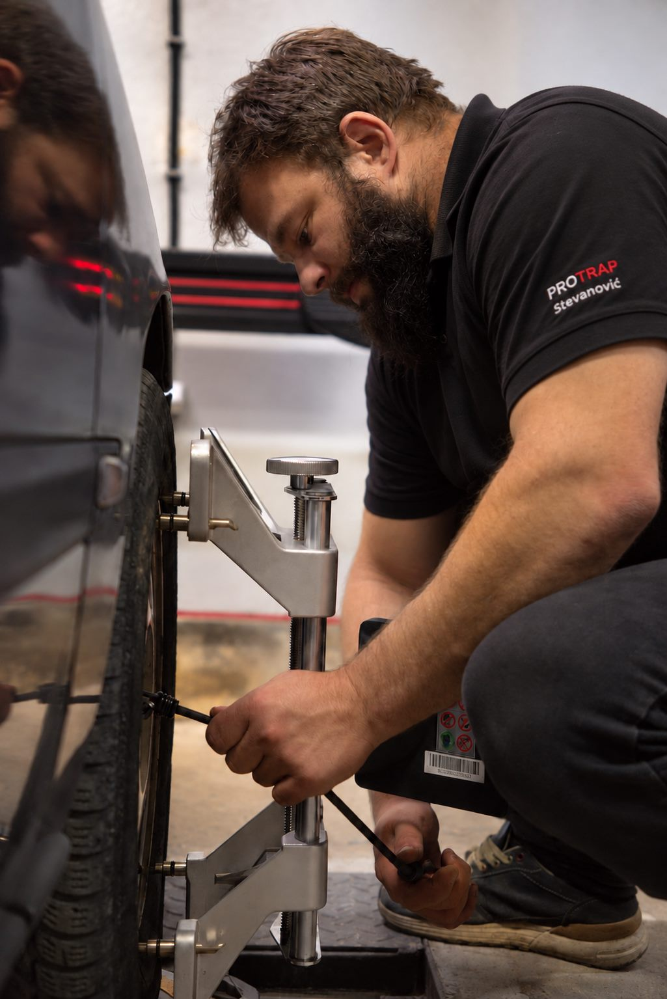

Pažljiv pregled
Najpre sagledamo stanje, da bismo znali šta je vašem vozilu zaista potrebno.
PRIČA O PROTRAPU
Tehničko znanje i ljubav prema automobilima pretočeni u pažljiv rad.

PROTRAP STEVANOVIĆ · ALIBUNARO NAMA
ProTrap Stevanović nastao je iz spoja tehničkog znanja i ljubavi prema automobilima.
Iza servisa stoji Miloš Stevanović, diplomirani inženjer mehatronike, sa višegodišnjim iskustvom u održavanju i radu sa mašinama.
Interesovanje za automobile kod njega postoji još od srednjoškolskih dana. Godinama je učio, istraživao i radio na automobilima, a želja da se time bavi profesionalno vremenom je prerasla u ideju o sopstvenom servisu.
Danas to iskustvo i znanje prenosi u svoj posao, sa željom da svakom vozilu pristupi pažljivo i odgovorno.
Verujemo da održavanje automobila ne treba da se svodi samo na rešavanje problema kada se pojavi. Pravovremena provera i pravilno održavanje mogu napraviti veliku razliku u ponašanju automobila na putu.
UPOZNAJTE NAŠE USLUGE ↗IZ NAŠE RADIONICE
Oprema i trenuci iz svakodnevnog rada u ProTrap servisu.
NAŠ PRISTUP
Najpre sagledamo stanje, da bismo znali šta je vašem vozilu zaista potrebno.
Tehničko znanje i odgovarajuća oprema za usluge koje obavljamo.
Objašnjavamo šta radimo i brinemo o svakom detalju.
SVRATITE DO NAS